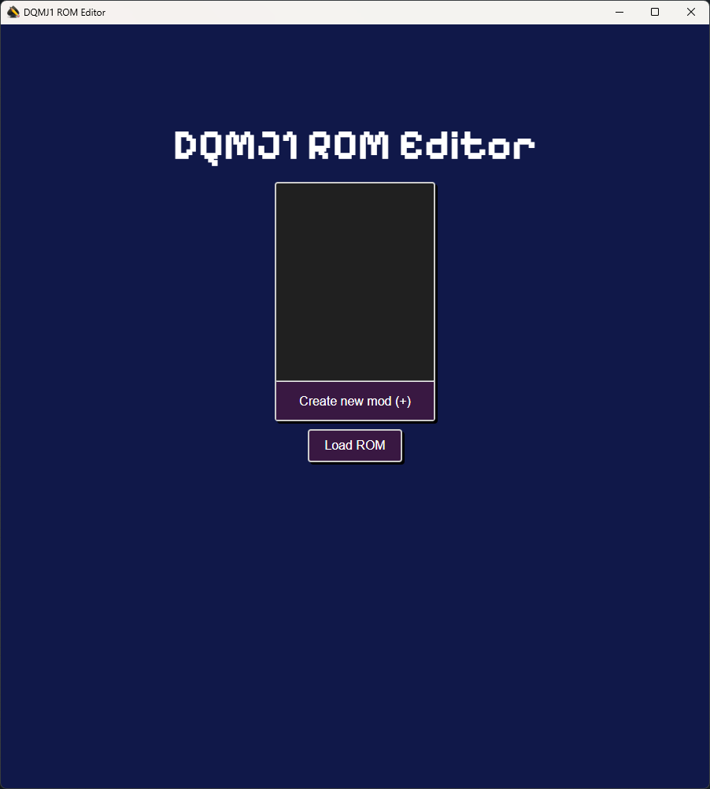
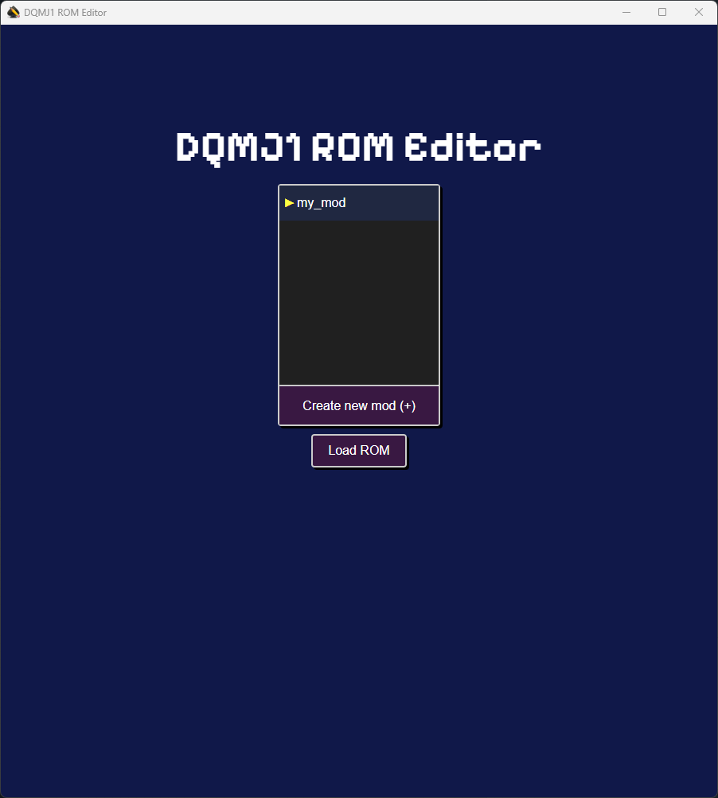
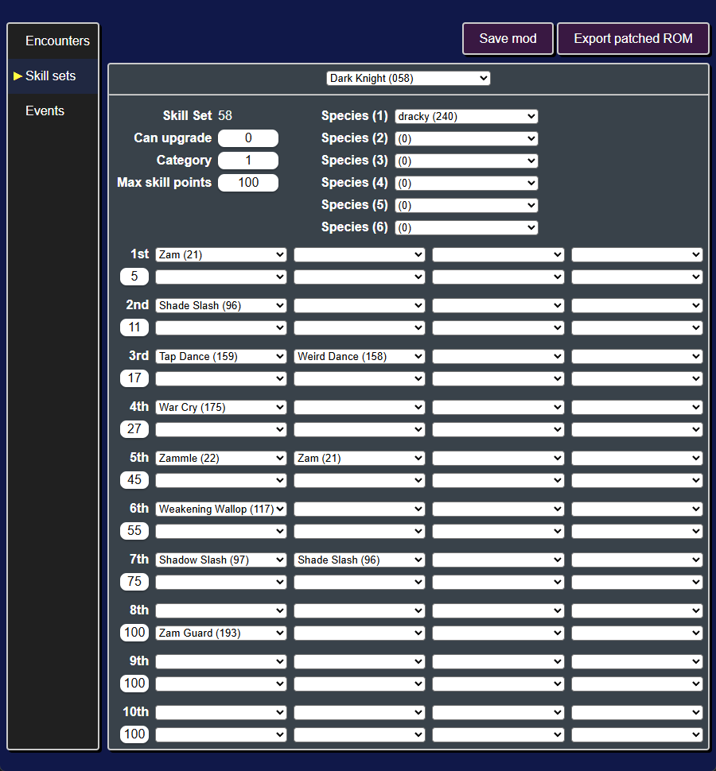
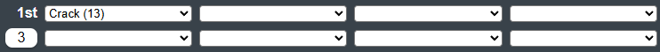
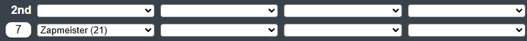
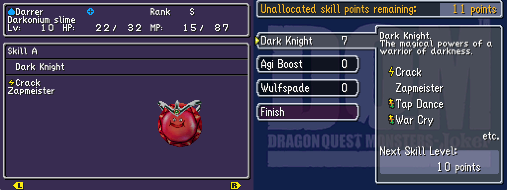

Introduction
DQMJ1 ROM Editor is an modding tool / ROM editor for Dragon Quest Monsters Joker 1.
It currently support modifying:
- Encounter tables - changing stats, skills, etc. for enemies, starter monsters, and gift monsters
- Skill sets - changing skills, traits, and skill point costs
- Events [experimental] - modifying cutscenes and overworld events
Getting Started
Here you'll learn about the different features of the ROM editor:
- Installation - Installing DQMJ1 ROM Editor
- Basics - Creating a mod and choosing a ROM to base it off of
- Modifying encounters - Modifying starter monsters, enemies, etc.
- Modifying skill sets - Modifying skill set rewards
- Modifying event scripts - Modifying cutscenes and overworld logic
Installation
Windows
- Download the
.msiinstaller file from the releases page - Double click on the
.msiinstaller to run it - Follow the instructions in the installer
- Run the application from your desktop search bar (
dqmj1_rom_editor)
Linux
- Download your Linux file of choice (
.AppImage,.deb,.rpm) from the releases page- I've only tested the
.AppImage. If you encounter issues with any of them, create an issue about it.
- I've only tested the
- Run / install your file of choice
Basics
When you open DQMJ1 ROM Editor, it will open to the Mod Selection window. Here you create a mod and load a ROM to begin making changes to the game.
Create a mod
To create a mod, click on the Create a new mod (+) button and enter a name for the mod.

Loading a ROM
Once you have created a mod and selected it, you can click on the Load ROM button to select a ROM to base your mod on.
Typically you'll want to select an original ROM for the game, but you can select an already modified ROM (ex. a randomizer).

After loading a ROM you will be able to make changes to it and save those changes as a mod.
Modifying encounters
The encounters table is a data file within the game that details all of the enemies, bosses, starter monsters, and gift monsters. Encounters determine monster's species, stats, moves, skill sets, etc..
Editing the encounters table will enable you to:
- Create new bosses
- Increase the difficulty of specific encounters
- Change the starter monsters
- and more!

Modifying a starter
As an example, let's change one of the starter monsters. The three starter monsters are in the table rows 048, 049, and 050.
Let's edit encounter 048, the starter Dracky.
Using the Species dropdown, we can change it from a Dracky to a Darkonium Slime. With the dropdown selected, you can start typing darkonium and darkonium slime (28) should be highlighted.
We can also give it a third skill set by clicking on the Skill set (3) dropdown and typing in Wulfspade to give it the Wulfspade skill set.

At this point, it's a good idea to save the changes we made to the mod. To do that click on the Save mod button (or press Ctrl + s).
Next you should export the ROM with this change to the starter Dracky by clicking on the Export patched ROM button (or pressing Ctrl + e). Once you play up to point you get to choose your starter monster, you'll find the Darkonium Slime we created.

Modifying other encounters
To modify an encounter, you'll need to find its encounter id.
As a general rule of thumb:
| Category | Encounter ID range |
|---|---|
| Bosses | 1 - 39 |
| Starters & Gift Monsters | 44 - 74 |
| Scout/Rival Monsters | 304 - 378, 431 - 751 |
To find a particular encounter, a good first place to look is the DQM:J Wiki.
For example, on the Slime page you can find an encounter listing for the slimes that appear on Infant Isle.

The codes in the bottom right corner are encounter ids in hexadecimal (050, 109, and 10a). The ROM editor uses decimal ids (ex. 050 hex = 080 decimal).
Let's go to the first Slime encounter by clicking on the encounter select dropdown (in the top middle of the page) and typing in the encounter id (ex. 080).

Let's make it a metal slime! We'll change its species to metal slime (6) and its exp dropped to 3072.
Next export the ROM and play up to Infant Isle.

In the overworld the slimes still appear as slimes. This is because their overworld model and behavior is not controlled by the encounters table.
Next let's modify some skill sets!
Modifying skill sets
The skill set table is a data file within the game that details the rewards for allocating skill points into specific skill sets. Each skill set reward level has a skill point requirement and one or more skills, traits, or stat increases they reward.
Editing the skill sets table will enable you to:
- Create custom skill sets
- Re-balance existing skill sets

Modifying a skill set
As an example, let's change one of the skill sets that a starter monster has.
Let's edit Dark Knight (058), since the starter Dracky has it.
First click on "Skill sets" to switch to that tab. By default it will already show the Dark Knight skill set.
We'll make two different changes to this skill set:
| Reward level | Skill Points | Skills | Traits |
|---|---|---|---|
| 1 | 5 -> 3 | Zam (21) -> Crack (13) | - |
| 2 | 11 -> 7 | Shade Slash (96) -> None | None -> Zapmeister (21) |
Level 1 -> Crack
First we'll change the reward level 1 to require only 3 skill points and reward Crack. To do this, you'll need to edit the row marked "1st" and the row below it.
- The box below "1st" is the number of skill points required, so we'll change that from 5 to 3.
- The boxes to the right of "1st" are the skills rewarded, so we'll change the first one from "Zam (21)" to "Crack (13)".

Level 2 -> Zapmeister
Next we'll change the reward level 2 to require only 7 skill points and reward the Zapmeister trait. This time we'll be editing the row marked "2nd" and the row below it.
- Like before, we'll change the number of skill points required from 11 to 7.
- The boxes to the right of the number of skill points are the traits rewarded, so we'll set the first one to "Zapmeister (21)".
- We'll also need to set the skill box next to "2nd" to empty (first option in the dropdown).

Testing ingame
Next we'll save the mod (Ctrl + s) and export the ROM (Ctrl + e).
Pick the first starter, get to Infant Isle, and fight monsters until you get at least 7 skill points.
Then you'll be able to allocate those skill points to the Dark Knight skill set and obtain Crack and Zapmeister.

In this tutorial, we have avoided adding any skill increases or multiple skills/traits at the same reward level. Both of these things are possible, but the exact conditions for them working correctly are not yet known.
It seems that the category of the skill set affects how many stat increases a skill set can have. It also seems that multiple skills/traits for the same reward level serve to encode "skill/trait" upgrades (ex. Frizz upgrading to Frizzle).
Next let's modify some event scripts to make changes to cutscenes.
Modifying event scripts
Event scripts are files that control cutscenes and overworld interactions.
Editing event scripts will enable you to:
- Add new cutscenes
- Make changes to existing cutscenes
- Make changes to overworld logic
- and more!

Modifying an existing cutscene
As an example, let's change the dialogue in the opening cutscene.
Exporting event scripts
First we'll need to export the game's event scripts.
After clicking on the "Events" tab, you'll see a list of event scripts on the left.
We can export all the scripts in one go by clicking on the Export events button and selecting a directory to write the scripts to.
Editing the event
Next we'll need to find the event script for the opening cutscene.
Each of the event scripts starts with a prefix, in particular all cutscene script start with demo. In our case we need to edit demo001.evt.dqmj1_asm. The .dqmj1_asm extensions indicates that this is a disassembled event script for DQMJ1.
You can open up demo001.evt.dqmj1_asm in Notepad, VS Code, or any other text editor.

You can see that the file is divided into two sections: (1) a data section, and (2) a code section. For now we're only interested in the code section.
Each line of the code section is an instruction (ex. Sleep Const 60.0), which consists of a name (ex. Sleep) and arguments (ex. Const 60.0).
Since we want to modify some dialog, we can look through the file until we find an instruction that contains dialog. In particular looking for any instruction with the name SetDialog.

Let's go ahead and change the text for the first SetDialog instruction.

Then save the modified event script.
Importing the modified event
Next we need to import the modified event script back into the ROM editor.
To do this, select the modified demo001.evt.dqmj1_asm file in your file browser and click and drag it onto the main section of the ROM editor.

Then save the mod, export the ROM, and start a new game.
During the opening cutscene you'll see the updated dialog.